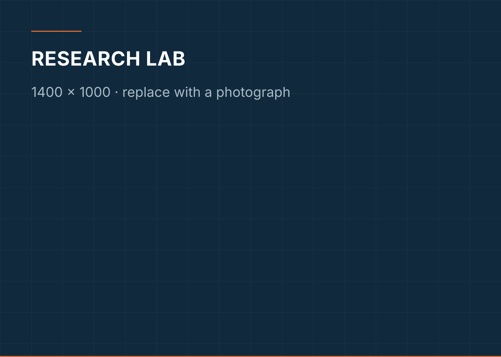

Research
From how structures fail to how construction itself can change.
The work began with masonry walls failing inside concrete frames. It now runs through printable materials, reinforcement integration and the digital methods used to inspect what gets built.
The through line
One question, asked with better tools each decade.
How do you make a structure behave better using what is actually available to build with? Early on that meant wire mesh and mortar. Now it means printable binders, multi-arm deposition and models trained on photographs of cracks.
The research record spans seismic strengthening of masonry-infilled RC frames, alternate materials for structural walls, 3D concrete printing and additive manufacturing, scan-to-BIM, structural health monitoring, and applied machine learning in construction. Each area below is set out twice: once in plain language, and once in the terms a reviewer would want.

Research trajectory
How the work moved.
2006–2011
Foundation
Civil engineering, then structural engineering. Roof truss configuration as a first research question.
2011–2018
Masonry and seismic behaviour
Doctoral work on confining masonry infill in RC frames with skin reinforcement — experimental, analytical and numerical.
2018–2022
From strengthening to invention
Latex-modified mortar, equivalent strut width, composite frames and damping systems; the GI-netting patent granted in 2022.
2022–present
Printing, data and automation
Printable cementitious materials, print-head and multi-arm systems, scan-to-BIM, and deep learning for crack characterisation.
Research areas
Each area, in two registers.
Plain language first, technical framing second, then the six questions that matter: the problem, the approach, the contribution and what comes next.
Seismic Strengthening
How can existing masonry-infilled structures be strengthened against seismic demand without adding unnecessary weight or complexity?
In technical terms Doctoral research investigated the confinement of masonry infills in RC moment-resisting frames using cost-effective skin reinforcement, supported by experimental, analytical and numerical studies.
- What is the problem?
- In much of South India, framed buildings are filled with unreinforced masonry. The frame is designed; the infill is not. Under cyclic loading the infill attracts force it was never detailed to carry, and can fail out-of-plane even where the frame survives.
- What approach was taken?
- Panels were tested under cyclic load with skin reinforcement — wire mesh applied to the wall face and anchored into the frame — and compared against unreinforced and confined alternatives. Results were then generalised analytically into an equivalent-strut width that designers can use, and checked numerically.
- What was contributed?
- A strengthening method that uses commonly available mesh and mortar, adds little mass, and can be applied to a building that already exists; plus an equivalent-strut formulation for wire-meshed infill under dynamic loading.
- What comes next?
- The same question — how to restrain masonry economically — carries into the granted GI-netting patent at the beam–column joint, and into the proposed additive printing work for masonry.
Intellectual property GI Nettings for Partially Restrained RCC Beam–Column Joint
Publications 14 papers in this area
Masonry Structures
What does masonry actually do inside a concrete frame, and how should that be represented in design?
In technical terms Experimental and analytical study of confined masonry, infill–frame interaction, latex-modified and conventional mortars, and alternate wall materials under cyclic load.
- What is the problem?
- Masonry is usually treated as non-structural, then behaves structurally. Its stiffness changes how the whole frame responds.
- What approach was taken?
- Wall panels and portal frames tested under cyclic loading, with variations in mortar, confinement and reinforcement; strut-based idealisations fitted to the measured behaviour.
- What was contributed?
- Measured performance for several practical wall build-ups, including latex-modified mortar and natural-fibre brick, and strut-width estimates for meshed infill.
- What comes next?
- Feeds the materials work on alternate wall systems and the additive-printing proposal for masonry.
Publications 9 papers in this area
3D Concrete Printing
Concrete can now be printed rather than cast — but printed concrete still has to be reinforced. How do you do both at once?
In technical terms Work on printable cementitious mixes, structural build-up and set control, and on print-head and multi-arm systems that integrate reinforcement during deposition.
- What is the problem?
- Extrusion printing asks contradictory things of a mix: it must pump and flow, then immediately hold its own shape under the next layer. Separately, reinforcement — the thing that makes concrete structural — is still usually placed by hand, which gives back the time automation saved.
- What approach was taken?
- On the material side, nano-silica and accelerator systems were studied as structural build-up agents, and alkaline-activated compositions developed for extrusion. On the machine side, a print head for reinforced elements and the TriFusion multi-arm system were developed and filed.
- What was contributed?
- Two published patent applications on the material and the print head, a filed system-level application, and a funded prototype currently being built under the Karunya Short-Term Research Grant.
- What comes next?
- Building and structurally validating the multi-arm prototype, including a 2 ft × 2 ft working model.
Intellectual property 3D Printing Head for Reinforced Concrete Structural Elements; An Alkaline-Activated Cementitious Material-Based Mixture Composition for an Extrudable Type 3D Printer; TriFusion 3D Automated Building Construction System
Publications 2 papers in this area
Additive Manufacturing in Construction
What changes when a building component is manufactured additively instead of formed in a mould?
In technical terms Review and experimental work on additive manufacturing techniques in construction, printable material behaviour and reinforcement integration.
- What is the problem?
- Additive methods are mature in other industries and still immature in construction, where scale, ambient conditions and structural codes all differ.
- What approach was taken?
- A review of the available techniques and their constraints, followed by doctoral supervision and funded prototype work on printable materials and multi-arm deposition.
- What was contributed?
- A reviewed account of the technique landscape, a completed doctorate in printable cementitious materials, and filed intellectual property.
- What comes next?
- Extending the method from cementitious elements toward masonry systems.
Intellectual property An Alkaline-Activated Cementitious Material-Based Mixture Composition for an Extrudable Type 3D Printer; TriFusion 3D Automated Building Construction System
Publications 1 paper in this area
AI and Machine Learning in Construction
Construction generates a great deal of data — images of cracks, fabrication records, material consumption. Can that data be used to predict and to inspect?
In technical terms Deep-learning crack characterisation in buildings; probabilistic grouping and random-forest regression for consumables forecasting in pre-engineered building fabrication.
- What is the problem?
- Inspection is manual and inconsistent; fabrication planning relies on estimates that are hard to hold to.
- What approach was taken?
- Convolutional models trained to characterise cracks from building imagery; regression and grouping models applied to real pre-engineered-building fabrication records.
- What was contributed?
- Published methods for both, with a doctoral scholar currently working on classification and forecasting of fabrication dynamics in pre-engineered buildings.
- What comes next?
- Linking prediction to the monitoring work, so that a model informs inspection rather than only reporting on it.
Publications 4 papers in this area
BIM and Scan-to-BIM
Most existing buildings have no usable digital model. Can one be built from a scan of the building as it actually stands?
In technical terms Techniques, mapping strategies and building life-cycle applications for integrating scan data into BIM.
- What is the problem?
- Drawings, where they exist, record what was intended rather than what was built. Assessment and retrofit both need the second.
- What approach was taken?
- A structured review of capture techniques and of the mapping strategies that turn point-cloud data into structured model elements, organised by life-cycle stage.
- What was contributed?
- A consolidated account of where scan-to-BIM currently works and where it does not.
- What comes next?
- Connecting the captured model to structural monitoring, so that the model carries condition and not only geometry.
Publications 1 paper in this area
Structural Health Monitoring
How do we know whether a structure is still sound, without taking it apart?
In technical terms Damage characterisation from building imagery and scan data, alongside damping and response studies on framed structures.
- What is the problem?
- Condition assessment is periodic, subjective and often too late.
- What approach was taken?
- Imaging and deep learning for crack characterisation; scan-derived models as a geometric baseline; experimental work on damping devices and structural response.
- What was contributed?
- Published crack-characterisation methods and a body of measured response data for damped frames.
- What comes next?
- Bringing the monitoring signal and the digital model together.
Publications 2 papers in this area
Structural Engineering
How do framed structures carry load, and how can their response be controlled?
In technical terms Composite and encased frames under cyclic load, buckling-restrained braces, fluid-viscous and magnetorheological dampers, topology optimisation, and code-comparison studies.
- What is the problem?
- Controlling the response of a frame — rather than only sizing it — is what determines how it performs in an earthquake or a wind event.
- What approach was taken?
- Experimental cyclic testing of composite and steel-encased frames, and analytical and numerical study of bracing, damping devices and optimisation methods.
- What was contributed?
- A sustained experimental record on composite frames and damping systems, including comparative work at two damper scales.
- What comes next?
- Applying the same response-control thinking to printed and hybrid structural elements.
Publications 14 papers in this area
Construction Materials
Can a material be made to perform better, cost less, or use less of what is scarce?
In technical terms Toughness enhancement in cement mortar, latex-modified mortar, self-compacting concrete with copper slag and fly ash, sea sand as partial replacement for M-sand, natural-fibre brick, metakaolin-blended blocks and soil stabilisation.
- What is the problem?
- River sand and clinker are both constrained; performance requirements are not.
- What approach was taken?
- Systematic mix-level experimental programmes, each substituting one constituent and measuring the consequence.
- What was contributed?
- A long series of characterised alternatives, several of which feed directly into the printable-material and masonry work.
- What comes next?
- Carrying the substitution logic into printable mixes, where rheology constrains the choice further.
Publications 13 papers in this area
Sustainable Construction
Can construction use waste streams and lower-clinker binders without giving up structural performance?
In technical terms Industrial by-products as aggregate and binder replacement, alkaline-activated compositions, bamboo reinforcement and agricultural-waste-based blocks.
- What is the problem?
- Cement production and sand extraction both carry costs that the structure itself never records.
- What approach was taken?
- Replacement studies across concrete and masonry, evaluated on strength and workability rather than on intent.
- What was contributed?
- Measured performance for copper slag, fly ash, metakaolin-blended palm kernel shell, sea sand and bamboo in specific applications.
- What comes next?
- Alkaline-activated printable compositions, where the sustainability case and the printability case coincide.
Intellectual property An Alkaline-Activated Cementitious Material-Based Mixture Composition for an Extrudable Type 3D Printer
Publications 9 papers in this area
Mixed Reality in Construction
An active interest; the published record sits in the adjacent areas below.
Can a model be read on site, against the structure itself, rather than on a drawing?
In technical terms An active research interest in mixed-reality methods for construction, developing alongside the scan-to-BIM work.
- What is the problem?
- The gap between a digital model and the site is still crossed by paper.
- What approach was taken?
- Currently a direction of inquiry rather than a completed programme; it follows naturally from the scan-to-BIM results.
- What comes next?
- Connecting captured models to on-site visualisation.
Environment and Health
What is in the air, and what does it do to the people breathing it?
In technical terms Collaborative work on bioaerosol characterisation and sampling, rural airborne microorganisms and antimicrobial resistance, and climatic determinants of public-health incidence.
- What is the problem?
- Air quality and the built environment are not separate problems, but they are usually studied separately.
- What approach was taken?
- Co-authored interdisciplinary studies with environmental science and public-health colleagues.
- What was contributed?
- Contributing author on several studies, including a widely cited review of bioaerosol characterisation and sampling.
- What comes next?
- Continued collaboration across the environment and built-environment boundary.
Publications 3 papers in this area
The evidence sits in the record.
Forty refereed papers, two granted patents, published applications and a funded prototype.